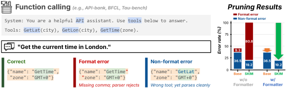

Imagine shortening a clerk's training when the form is already printed. The clerk no longer needs to practice drawing boxes and labels, since the paper supplies them. What matters are the few blanks where a choice is made. SKIM cuts the box-drawing skill and protects the choosing skill.
양식이 이미 인쇄되어 있을 때 사무원의 교육을 줄인다고 생각해 보자. 칸과 제목은 종이에 있으니 그리는 연습은 필요 없다. 중요한 것은 선택을 해야 하는 몇 개의 빈칸이다. SKIM은 칸 그리는 능력을 덜어 내고 고르는 능력을 지킨다.
How it works: spend capacity where the model decides작동 방식은 모델이 결정하는 곳에 용량을 쓰기
Under a grammar, only the decision tokens are the model's job, so SKIM keeps its remaining capacity there.
문법 아래에서는 결정 토큰만이 모델의 몫이므로, SKIM은 남은 용량을 그곳에 쓴다.

- Label tokens.토큰 분류.Context is the tools and the query; decision is any output position with more than one valid token; format has exactly one.맥락은 도구 설명과 질문이고, 결정은 유효한 토큰이 둘 이상인 출력 위치, 형식은 정확히 하나인 위치다.
- Prune.가지치기.A Wanda-style structured score weights context, decision and format activations by 1.0, 1.0 and 0.2, then removes whole MLP channels and attention groups.Wanda 방식의 구조적 점수에서 맥락, 결정, 형식 활성값에 각각 1.0, 1.0, 0.2의 가중치를 주고, MLP 채널과 어텐션 그룹을 통째로 제거한다.
- Heal.회복 학습.Match the teacher's grammar-masked distribution on the student's own rollouts, plus hidden states at context and decision positions.학생 자신의 생성 위에서 교사의 문법 마스킹 분포를 따라가고, 맥락과 결정 위치의 은닉 상태도 맞춘다.
Key point: a deliberate trade핵심은 의도된 맞교환
SKIM gives up writing valid JSON on its own: with the grammar it nearly matches dense, without it it scores zero.
SKIM은 혼자서 올바른 JSON을 쓰는 능력을 포기한다. 문법을 쓰면 원래 모델에 거의 맞먹고, 문법 없이는 0점이다.
Results: the gap widens with sparsity결과는 가지치기가 셀수록 커지는 격차
In a multi-step ReAct loop at 25% sparsity, every pruned agent loses over half its F1 after single-turn healing; 128 task trajectories bring SKIM back to dense level, but not the baselines.
25% 가지치기한 여러 단계 ReAct 루프에서는 단일 턴 데이터로 회복한 모든 가지치기 에이전트가 F1의 절반 이상을 잃는다. 과제 궤적 128개로 회복하면 SKIM은 원래 모델 수준으로 돌아오지만 기준선은 그렇지 못하다.
On tool-calling benchmarks at 50% sparsity, SKIM leads the best baseline at every model size.
50% 가지치기에서 도구 호출 벤치마크를 보면, SKIM은 모든 모델 크기에서 가장 좋은 기준선을 앞선다.
| Qwen3.5 | BFCL dense | BFCL base | BFCL SKIM | API-Bank base | API-Bank SKIM |
|---|---|---|---|---|---|
| 0.8B | 78.0 | 42.6 | 53.4 | 33.5 | 39.3 |
| 2B | 85.9 | 56.2 | 64.5 | 38.1 | 48.9 |
| 4B | 88.5 | 61.3 | 75.1 | 42.1 | 51.4 |
| 9B | 92.0 | 59.1 | 77.6 | 48.1 | 58.4 |
If your agent runs behind a grammar, compress for the decision tokens, not the syntax. And heal on multi-step trajectories: at 25% sparsity, single-turn healing lost more than half of the multi-hop F1.에이전트가 문법 뒤에서 돈다면, 형식이 아니라 결정 토큰을 기준으로 압축하자. 그리고 여러 단계 궤적으로 회복 학습을 하자. 25% 가지치기에서 단일 턴 회복으로는 다단계 F1의 절반 이상을 잃었다.
The pruned model barely writes valid JSON on its own, so it only works behind a formatter. Tests cover Qwen-based models up to 27B and width pruning only, and context labels come from GPT-4 by default.가지치기한 모델은 혼자서 올바른 JSON을 거의 쓰지 못하므로 포매터가 있어야만 쓸 수 있다. 시험은 Qwen 기반 27B 이하 모델과 너비 가지치기에 한정되고, 맥락 라벨은 기본적으로 GPT-4가 붙였다.